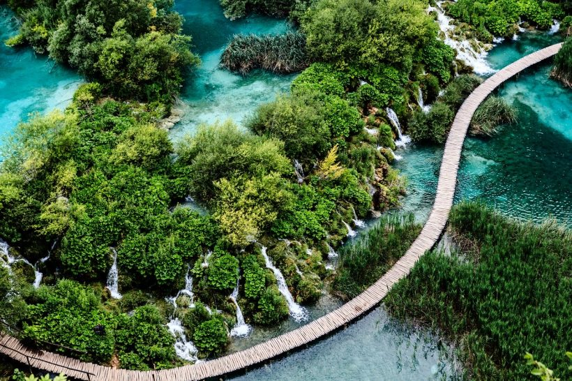
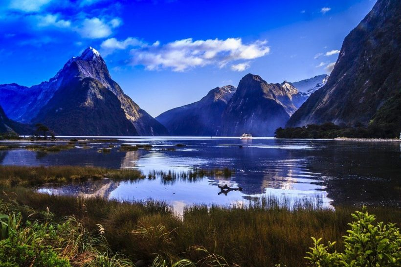
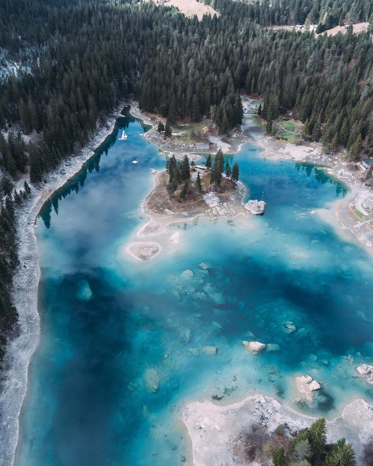
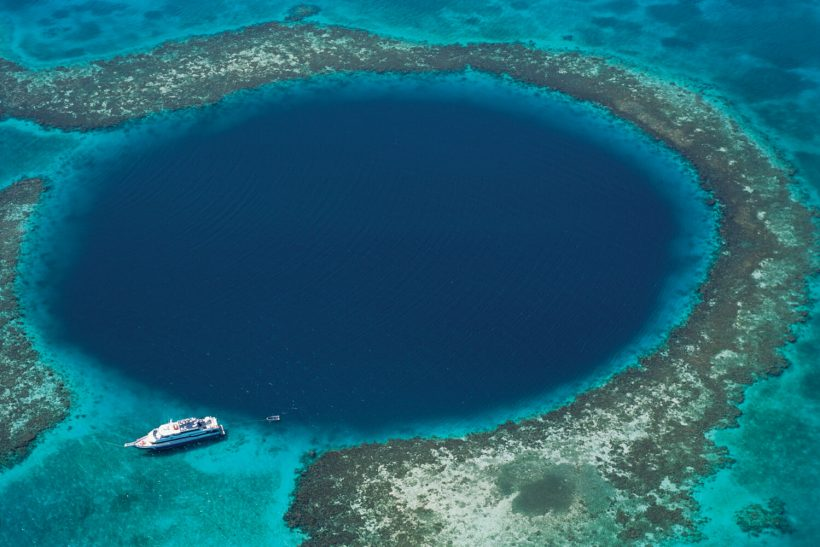

Imagens Aula 05 HTML
Paisagens Naturais
Fotos de algumas belas paisagens pelo mundo!
Wulingyuan - China:
Wulingyuan - China
Lagos Plitvice - Croácia:

Lagos Plitvice - Croácia
Milford Sound - Nova Zelândia:

Milford Sound - Nova Zelândia
Lago Caumasee - Suiça:

Lago Caumasee - Suiça
Great Blue Hole - Belize:

Great Blue Hole - Belize